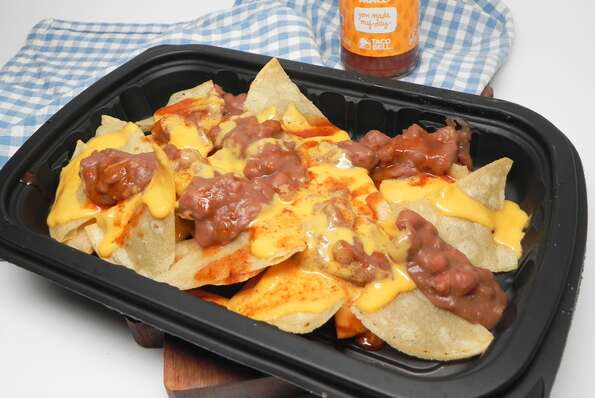

Triple Layor Nachos

Description
Last week at work there was some chatter about how it had been a year since Taco Bell® took the
Triple Layer Nachos off their menu and how they were missed. I set out on a mission and this
is what I came up with. Note: the restaurant chain sells their own line of refried beans,
queso, and sauce so that makes it all the more easy to recreate this at home. This will
dirty 4 pans but it is so worth it!
Ingredients
- 1 (16 ounce) can fat-free refried beans
- ¼ cup water
- ½ (15.5 ounce) jar prepared salsa con queso
- 2 tablespoons water
- ½ cup red enchilada sauce
- ¼ cup Taco Bell® mild sauce
- ½ cup vegetable oil
- 12 (6 inch) white corn tortillas, cut into chips
- salt to taste
Steps
- Line a plate with paper towels.
- Combine refried beans and 1/4 cup water in a small saucepan over low heat.
- Combine salsa con queso and 2 tablespoons of water in a second saucepan and heat over low heat.
- Combine salsa con queso and 2 tablespoons of water in a second saucepan and heat over low heat.
- Preheat vegetable oil in a large skillet over medium-high heat. Add tortilla chips to the skillet, making sure to not overcrowd.
Cook for 4 minutes, flipping halfway through. Use tongs and transfer chips to the paper towel-lined plate; sprinkle
with salt. Repeat with remaining chips.
- Divide chips between 4 serving dishes. Scatter beans on top of chips, drizzle with cheese, then drizzle with red sauce. Serve
immediately.